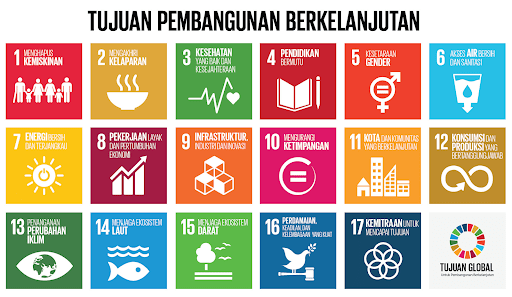

1. Tanpa Kemiskinan: Mengakhiri kemiskinan dalam segala bentuk di seluruh dunia.
2. Tanpa Kelaparan: Mengakhiri kelaparan, mencapai ketahanan pangan, dan menekankan upaya peningkatan nutrisi serta pertanian yang berkelanjutan.
3. Kehidupan Sehat dan Sejahtera : Mendorong kehidupan masyarakat yang sehat dan sejahtera bagi semua orang di segala usia.
4. Pendidikan Berkualitas: Menyediakan akses pendidikan yang inklusif, adil dan berkualitas dengan penjaminan mutu pendidikan, serta pemberdayaan tenaga pengajar bagi semua orang/anak.
5. Kesetaraan Gender: Mencapai kesetaraan dan pemberdayaan gender dengan terhapusnya diskriminasi, penghapusan kekerasan gender, serta mendorong partisipasi dan terlibatnya perempuan dalam segala bidang.
6. Air Bersih dan Sanitasi Layak: Menjamin akses layak terhadap air bersih dan sanitasi layak dengan pengelolaan air bersih, pembersihan sumber air dari polusi sehingga mencapai lingkungan yang sehat.
7. Energi Bersih dan Terjangkau: Memberikan ketersediaan energi yang terjangkau, dapat diandalkan, berkelanjutan/terbarukan, dan modern untuk semua kalangan.
8. Pekerjaan yang Layak dan Pertumbuhan Ekonomi: Mendukung pertumbuhan ekonomi yang inklusif dan berkelanjutan sehingga memastikan kesempatan kerja yang produktif dan layak untuk semua orang.
9. Industri, Inovasi, dan Infrastruktur: Membangun infrastruktur yang kokoh, meningkatkan industrialisasi yang inklusif dan berkelanjutan, serta mendorong inovasi baru.
10. Berkurang Ketimpangan: Mengurangi kesenjangan di dalam dan antar negara dengan mendorong inklusivitas.
11. Kota dan Permukiman yang Berkelanjutan: Mendorong perencanaan kota yang baik dengan akses transportasi baik. Sehingga kota dan pemukiman manusia inklusif, aman, tangguh, dan berkelanjutan.
12. Konsumsi dan Produksi yang Bertanggung Jawab: Menjamin pola konsumsi dan produksi yang berkelanjutan dengan efisiensi sumber daya, pengolahan limbah yang benar, dan penggunaan produk ramah lingkungan.
13. Penanganan Perubahan Iklim: Mengambil tindakan untuk mengatasi perubahan iklim dengan aksi-aksi seperti 3R’s, reboisasi, dan lainnya.
14. Ekosistem Lautan: Melestarikan dan melindungi sumber daya laut, ekosistem laut, dan pengendalian praktik perikanan yang berkelanjutan.
15. Ekosistem Daratan: Melindungi, memulihkan, dan mendukung pemanfaatan ekosistem daratan secara berkelanjutan.
16. Perdamaian, Keadilan, dan Kelembagaan yang Tangguh: Mendorong masyarakat yang damai, menyediakan akses terhadap keadilan untuk semua, dan membangun lembaga yang efektif, akuntabel, dan inklusif di semua tingkatan.
17. Kemitraan untuk Mencapai Tujuan: Memperkuat pelaksanaan kemitraan global untuk pembangunan berkelanjutan dengan kolaborasi internasional.

🎯17 Tujuan SDGs✅
